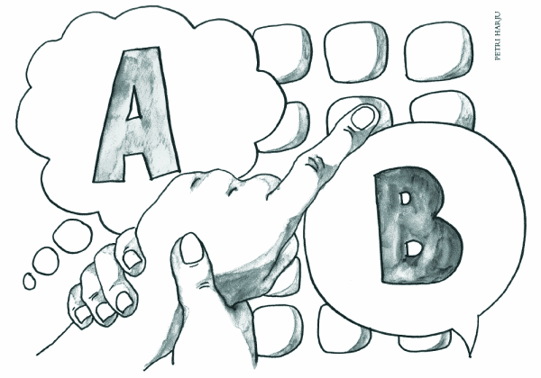

Fasilitointi tarkoittaa fasilitoijan välityksellä tapahtuvaa kommunikointia niin, että fasilitoija pitää kädestä, kyynärpäästä tai olkapäästä kiinni ja kirjoittaa avustettavan kädenliikkeiden mukaan joko näppäimistölle, kommunikaattorille tai tietokoneelle. Tutkimuksen tarkoituksena oli selvittää, kuka fasilitoidut viestit todellisuudessa kirjoittaa, avustaja (fasilitoija) vai avustettava (fasilitoitava). Aikaisempien tutkimusten perusteella tutkijat olettivat hypoteesinaan, että avustaja vaikuttaa oppilaan viestien sisältöihin.
Kokeelliseen tutkimukseen osallistui yksitoista 7–15-vuotiasta kehitysvammaista ja autistista oppilasta sekä heidän fasilitoijansa kahdesta länsisuomalaisesta koulusta. Tutkimus jakaantui kuuteen erilaiseen testiin: esinetestiin, kuvien nimeämiseen, kuvista kertomiseen, lukemistestiin, itsenäisen osoittamisen mittaukseen ja oman nimen kirjoittamiseen. Sokkotesteissä fasilitoijat sulkivat silmänsä siksi aikaa, kun oppilaat katsoivat heille näytettyjä kuvia, esineitä tai sanoja. Fasilitoijat kirjoittivat testeissä annetuista vihjeistä keskimäärin noin 50 % ja loput 50 % vastauksista oli merkityksettömiä sanoja tai sanaraunioita.
Kukaan oppilas ei saanut yhtään ainoaa oikeaa vastausta silloin, kun fasilitoija katsoi omaa vihjettään. Fasilitoinnin epäluotettavuutta voidaan tarkastella ainakin neljästä näkökulmasta. Näitä ovat aivotutkimus ja kielen ja oppimisen teoriat, fasilitoijaharha, silmänlume ja fasilitoijan vaikutus.
Fasilitoinnista käytetään myös muita nimiä kuten Tuettu kommunikoinnin harjoittelutekniikka, Facilitated Communication (FC) sekä Facilitated Communication Training (FCT). Tutkimuslinjoja on ollut pääasiassa kaksi: laadullinen ja kokeellinen. Fasilitointi ei ole kuitenkaan pystynyt näyttämään tuloksellisuuttaan kuvailevissa tutkimuksissa kiistattomasti. Siihen liittyy vielä paljon ristiriitaisia näkemyksiä ja havaintoja.
Suomessa on tehty joitakin laadullisia analyyseja fasilitoitavien henkilöiden teksteistä, mutta kokeellinen tutkimus on puuttunut. Tutkimukset tekijät ovat työssään pohtineet fasilitointiin liittyviä ongelmia niin yksilön kuin kouluyhteisönkin kannalta.
Tutkimuksen päätarkoituksena oli tutkia fasilitoitujen viestien aitoutta. Kokeellinen tutkimus suoritettiin erilaisin koeasetelmin. Ilmiötä tarkasteltiin neljästä näkökulmasta: 1) fasilitoijan vaikutus tekstin tuottamiseen, 2) oppilaiden vastaukset silloin, kun fasilitoija ei kuule eikä näe kysymystä, eikä näe näppäimistöä 3) fasilitoitavien oppilaiden lukutaito ja 4) fasilitoitavien oppilaiden itsenäisen osoittamisen kyky.
Fasilitoinnissa kirjoittajan kättä tuetaan kirjoittamisen aikana, kirjoittajan käden liikettä samalla hieman vastustaen. Menetelmästä innostuttiin monissa maissa melkein yhtä aikaa. Sen kehittäjänä voidaan kuitenkin pitää australialaista Rosemary Crossleytä, ja yhtenä fasilitoinnin puolestapuhujana Douglas Bikleniä Syracusen yliopistosta.
Fasilitoinnin käytölle on asetettu tiettyjä reunaehtoja. Näitä ovat mm. fyysisen tuen väheneminen, näppäimistöön katsominen ja sanallinen palaute. Kaikille fasilitoijille on painotettava, että he toimisivat määrätietoisesti ja tavoitteellisesti itsenäiseen kommunikointiin pyrkien.
Tämän vuoksi fasilitoijien on annettava fyysistä tukea vain sen verran, kuin fasilitoitava sitä tarvitsee. Lisäksi fasilitoitavien tulisi opetella kirjoittamaan mahdollisimman monen eri henkilön kanssa. Näppäimistöön katsominen ja itsenäinen kirjoittaminen ovat menetelmän tärkeimmät tavoitteet. Jos fasilitoitava ei katso näppäimistöön, fasilitointi on lopetettava heti. Fasilitoitavat eivät koskaan myöskään itsenäisty, jos heille annetaan liikaa ja liian kauan fyysistä tukea. (Biklen et al., 1992, Crossley, 1994, 2000 ja 2002.)
Fasilitoinnin käsitettä on vaikea jäsentää teoreettisesti. Crossley kirjoittaa välillä tuetun kommunikaation harjoittelusta. Samassa kirjoituksessa Crossley ristiriitaisesti kuitenkin välillä siirtyy puhumaan fasilitoinnista kommunikointina (Crossley 1994). Samalla tavalla myös Suomessa käsitteen määrittely on epäselvää. Tuetun kommunikoinnin harjoittelutekniikka ei anna selkeää kuvaa siitä, mitä määrittely pitää sisällään. Sanan ”harjoittelutekniikka” pitäisi muistuttaa fasilitoijaa koko ajan siitä, että kyseessä on välivaihe ja että tavoitteena on fasilitoitavan eteneminen itsenäiseen ilmaisuun, kirjoittaa mm. professori Kaisa Launonen Helsingin yliopistosta. (Launonen, 2005, 5).
Toisaalta Ketju-lehdessä (4/2005) Joensuun yliopiston professori Eija Kärnä-Lin yrittää tarkentaa jo aiempaa määritelmäänsä. Hän kirjoitti vuonna 2003, että fasilitointi on menetelmä eikä keino tuottaa ilmaisua. Nyt Kärnä-Linin mukaan fasilitointi ei ”sinällään pysty välittämään viestiä, vaan kommunikoivan henkilön ilmaisema ajatus tai asia välittyy hänen valitsemiensa graafi sten merkkien tai kuvien avulla”.
Moisert (2001) on koonnut yhteen tutkimukset fasilitoinnin vaikuttavuudesta vuoden 1995 jälkeen. Hän toteaa, että fasilitointi ei ole osoittautunut tieteellisissä tutkimuksissa päteväksi. Myöskään ei ole näyttöä siitä, että fasilitoitavat henkilöt olisivat viestien kirjoittajia. Kokeellisissa tutkimuksissa on havaittu, että fasilitoijat ovat kirjoitusten takana. Laadulliset tutkimukset perustuvat siihen olettamukseen, että viestien kirjoittaja on fasilitoitava. Niiden aineisto perustuu pääasiassa tekstianalyyseihin. Fasilitoinnin kannattajat uskovat, että fasilitointi on totta. He todistavat fasilitoidun tekstin luotettavuutta tekstianalyyseilla ja kertomuksiin perustuvilla viesteillä.
Kokeellisten tutkimusten kannattajat ovat sen kannalla, että fasilitoinnissa on kyse samasta ilmiöstä kuin erilaisissa hypnoosin ja suggestion tekniikoissa. Kyseessä ovat ns. ideomotoriset liikkeet, jotka ovat motoristen automatismien (esim. automaattikirjoitus Ouija-laudalla) ja taikavarvun käytön takana. Niitä on tutkittu muun muassa ns. Chevreulin heilurin avulla.
Taulukossa 1 on koottu yhteenveto kannattajien ja epäilijöiden väitteistä ja näkemyksistä.
| Osa-alueet | Kannattajat | Epäilijät |
|---|---|---|
| Kohderyhmä ja Määrittely | FC ei ole rajoitettu millekään ikä- tai diagnoosiryhmälle. Fasilitointi on tuetun kommunikoinnin harjoittelutekniikkaa. | Fasilitoinnin kohdentaminen on liian laajaa ja epäjohdonmukaista. Onko fasilitointi harjoittelua vai kommunikointia? |
| Fasilitoinnin tavoite | Fasilitoinnin tavoitteena on itsenäinen kirjoittaminen. | Itsenäisestä kirjoittamisesta ei ole olemassa todellisia lukua ja tilastoja. Itsenäinen kirjoittaminen ei ole enää fasilitointia. |
| Näppäimistöön katsominen | Fasilitoinnin edellytyksenä on se, että näppäimistöön on katsottava. Osa kannattajista uskoo, että fasilitoitavilla on valokuvamuisti. | Fasilitoitavat eivät katso kirjoittaessaan näppäimistöön. Valokuvamuisti on kansanomainen metafora. |
| Sananlöytämisen vaikeus | Fasilitoitavilla on sananlöytämisen vaikeuksia. | Sananlöytämisen vaikeudet eivät riitä selitykseksi sokkotestien epäonnistumisille. Fasilitoitavat osaavat vastata silloin, kun fasilitoija näkee tai kuulee vastaukset. |
| Apraksiahypoteesi | Fyysisen tuen tarpeen syynä apraksia. | Apraksian yhteydestä fasilitoitaviin ei ole tieteellistä näyttöä. |
| Normaali äly ja odottamaton luku- ja kirjoitustaito | Fasilitoitavat henkilöt ovat normaaliälyisiä, ja osalla heistä on jo olemassa oleva luku- ja kirjoitustaito. | Käyttäytyminen on erittäin ristiriitaista kirjoitusten kanssa. Miksi tarvitaan fyysistä tukea, jos osaa jo lukea ja kirjoittaa? |
| Laadulliset tutkimukset | Laadulliset tutkimukset osoittavat, että fasilitointi on tehokas kommunikoinnin keino. | Laadulliset tutkimukset sisältävät empiirisiä ongelmia ja perustuvat olettamukseen, että fasilitoitava toimii kirjoittajana. |
| Kokeelliset tutkimukset | Kokeelliset järjestelyt aiheuttavat fasilitoitavalle henkilölle mm. ahdistusta ja epäluottamusta. | Kokeelliset tutkimukset ovat osoittaneet, että fasilitointi ei ole aitoa kommunikointia. Miksi arvioinnit ja muut testit onnistuvat silloin, kun fasilitoija näkee tai kuulee vastaukset? |
Sokkotutkimuksiin osallistui yksitoista 6–15 -vuotiasta fasilitoitavaa oppilasta ja heidän fasilitoijansa kahdesta länsisuomalaisesta koulusta. Yksi oppilas teki vain esinetestin. Oppilaat noudattivat yksilöllistä opetussuunnitelmaa ja olivat pidennetyn 11-vuotisen oppivelvollisuuden piirissä. Oppilaiden diagnoosina oli autismi (5), Downin syndrooma (2) tai muu kehitysvamma (4). Viisi oppilasta oli kirjoitellut fasilitoiden yli vuoden, kaksi oppilasta yli kaksi vuotta ja neljä oppilasta yli kolme vuotta.
Fasilitoitaessa oppilaita tuettiin joko kämmenen alta tai ranteesta niin, että etusormi osoitti näppäimistöä. Kaksi oppilasta käytti testeissä valokopioitua pahvinäppäimistöä tai Light Writeria, muut käyttivät pahvinäppäimistöä. Fasilitoijat olivat oppilaille tuttuja koulunkäyntiavustajia.
Aineisto kerättiin syys–lokakuussa 2004. Kaikki testit teki sama tutkija. Tutkijat pyrkivät lisäksi huomioimaan fasilitoinnin kannattajien esittämän kritiikin seuraavilla menettelyillä: 1) Tutkijat olivat tuttuja henkilöitä. 2) Fasilitointi oli vakiintunut jo kommunikointimuodoksi kaikilla koehenkilöillä. 3) Jokaisella mittauskerralla tutkija arvioi ahdistuskäyttäytymistä. Jos ilmeni ahdistusta ja rauhattomuutta, tutkimus keskeytettiin. 4) Kaikki tehtävät tehtiin mahdollisimman luonnollisissa tilanteissa ja ympäristöissä. 5) Jos fasilitoija tunsi olonsa epämiellyttäväksi, koe voitiin lopettaa.
Tutkimusasetelma oli sokkotutkimus. Kaikissa koeasetelmissa tutkijat mittasivat oppilaan kirjoittamista itsenäisesti ja fasilitoijan tuella. Testeissä oppilaat saivat sellaista tietoa ja informaatiota, jota fasilitoijat eivät tienneet. Varsinaista tutkimusta edelsi mittarin esitestaus.
Sokkotehtävä. Esineiden nimeäminen. Esineiden nimeämistä tutkittiin kolmella eri tehtäväsarjalla. Ensimmäisessä sarjassa tutkija näytti oppilaalle nitojaa, silmälasikoteloa, linkkuveistä ja diskettiä niin, että myös fasilitoija näki esineet. Toisessa sarjassa tutkija näytti oppilaalle autoa, pientä nukkea, linkkuveistä, palloa ja kelloa. Vain oppilas näki esineet. Kolmannessa sarjassa tutkija näytti samat (paitsi linkkuveistä) esineet sekä oppilaalle että fasilitoijalle. Oppilaan tuli kirjoittaa fasilitoiden esineiden nimet.
| Fasilitoija ja oppilas näkevät saman esineen | Vain oppilas näkee esineen | Fasilitoija ja oppilas näkevät edellisen osion esineet | |||||||||||
|---|---|---|---|---|---|---|---|---|---|---|---|---|---|
| nitoja | silmälasikotelo | linkkuveitsi | disketti | auto | nukke | pallo | linkkuveitsi | kello | auto | nukke | pallo | kello | |
| Aatu | 1 | 1 | 1 | 1 | 0 | 0 | 0 | 0 | 0 | 1 | 1 | 1 | 1 |
| Pasi | 1 | 1 | 1 | 1 | 0 | 0 | 0 | 0 | 0 | 1 | 1 | 1 | 1 |
| Teemu | 1 | 1 | 0 | 0 | 0 | 0 | 0 | 0 | 0 | 0 | 1 | 1 | 1 |
| Eeva | 1 | 1 | 1 | 1 | 0 | 0 | 0 | 0 | 0 | 1 | 0 | 0 | 0 |
| Väinö | 1 | 1 | 1 | 1 | 0 | 0 | 0 | 0 | 0 | 1 | 1 | 1 | 1 |
| Kari | 1 | 1 | 1 | 1 | 0 | 0 | 0 | 0 | 0 | 1 | 1 | 1 | 1 |
| Hanna | 1 | 1 | 1 | 1 | 0 | 0 | 0 | 0 | 0 | 1 | 1 | 1 | 1 |
| Kai | 1 | 1 | 1 | 1 | 0 | 0 | 0 | 0 | 0 | 1 | 1 | 1 | 1 |
| YHT. | 8 | 8 | 7 | 7 | 0 | 0 | 0 | 0 | 0 | 7 | 7 | 7 | 7 |
| Fasilitoija ja oppilas näkevät saman esineen | Vain oppilas näkee esineen | Fasilitoija ja oppilas näkevät edellisen osion esineet | |||||||||||
|---|---|---|---|---|---|---|---|---|---|---|---|---|---|
| nitoja | silmälasikotelo | linkkuveitsi | disketti | auto | nukke | pallo | linkkuveitsi | kello | auto | nukke | pallo | kello | |
| Kaisa | 1 | 1 | 1 | 1 | 1 | 1 | 1 | 1 | 1 | ||||
| Iida | 1 | 1 | 1 | 1 | 1 | 1 | 1 | 1 | 1 | ||||
| Jyrki | 1 | 1 | 1 | 1 | 1 | 1 | 1 | 0 | 1 | ||||
| YHT. | 3 | 3 | 3 | 3 | 3 | 3 | 3 | 2 | 3 | ||||
Sokkotehtävä. Kuvien nimeäminen. Tutkija näytti oppilaalle yksitellen neljä erilaista kuvaa (auto, juna, kuppi ja lasi). Fasilitoija ei nähnyt oppilaan kuvia, vaan katsoi paperiarkkia, jossa oli neljä harhaanjohtavaa tapahtumakuvaa (mies sahaa lautaa, nainen syö leipää, poika ui ja mies odottaa bussia). Oppilas ei nähnyt fasilitoijan kuva-arkkia. Oppilaan tuli kirjoittaa fasilitoiden, mitä oli nähnyt.
Sokkotehtävä. Kuvasta kertominen. Kuvista kertomisen tehtävä sisälsi oppilaalle neljä erilaista kuvaa (pupu nukkuu häkissä, nalle ahmii hunajaa, hiiri kurkistaa kattilan alta ja kilpikonna makaa lehden alla). Tutkija antoi fasilitoijalle paperiarkin, jossa oli neljä kuviin sopivaa sanaa (nukkuu, ahmii, kattilan ja lehden). Oppilas ja fasilitoija eivät nähneet toistensa kuvia ja sanoja. Oppilaan tuli fasilitoiden kirjoittaa näkemästään kuvasta kolmen-neljän sanan lause.
Sokkotehtävä. Lukemisen mittaus. Lukemistestin ensimmäisenä osiona tutkija näytti oppilaalle tämän nimeä ja fasilitoijalle tutkimuspäivän päivämäärää. Muissa osioissa tutkija näytti oppilaalle ja fasilitoijalle neljä samanlaista sanalappua (suu, pupu, lamppu, auto ajaa) ja 11 erilaista sanalappua (äiti/isä, auto/ pyörä, talo/koulu, kello/koru, mummo/täti, nukke nukkuu/koira haukkuu, poika syö/ tyttö leikkii, lammas/mato, hevonen/kynä, laukku/WC). Oppilas ja fasilitoija eivät nähneet toistensa lappuja. Oppilaan tuli lukea omat sanalappunsa ja kirjoittaa vastauksensa fasilitoimalla.
Itsenäisen osoittamisen mittaus. Oppilaan tuli itsenäisesti ilman fasilitoijan apua näyttää paperiarkilta suunnilleen näppäimistön näppäinten kokoisia pieniä kuvia (auto, talo, kala, kynä, pallo, kukka, tyttö, kello, tuoli, pöytä), kirjaimia (A, I, U, O, E, S, P, M, L, R, K, V, T) ja numeroita (1–9 ja 0). Tutkija pyysi oppilasta näyttämään osiot satunnaisessa järjestyksessä: ”Näytä kala, näytä pallo”, jne.
| ”Näytä kala | pöytä | auto | kynä | pallo | tyttö | talo | kukka tuoli | kello | |
|---|---|---|---|---|---|---|---|---|---|
| Aatu | 1 | 1 | 1 | 1 | 1 | 1 | 1 | 1 | 1 |
| Pasi | 1 | 1 | 1 | 1 | 1 | 1 | 1 | 1 | 1 |
| Kaisa | 1 | 1 | 1 | 1 | 1 | 1 | 1 | 1 | 1 |
| Teemu | 1 | 1 | 1 | 1 | 1 | 1 | 1 | 1 | 1 |
| Eeva | 0 | 0 | 0 | 0 | 0 | 0 | 0 | 0 | 0 |
| Väinö | 0 | 0 | 0 | 0 | 0 | 0 | 0 | 0 | 0 |
| Kari | 1 | 1 | 1 | 1 | 1 | 1 | 1 | 1 | 1 |
| Iida | 1 | 1 | 1 | 1 | 1 | 1 | 1 | 1 | 1 |
| Jyrki | 1 | 1 | 1 | 1 | 1 | 1 | 1 | 1 | 1 |
| Kai | 1 | 1 | 1 | 1 | 1 | 1 | 1 | 1 | 1 |
| A | O | I | U | E | S | L | K | P | V | M | T | R | 1 | 4 | 8 | 0 | 2 | 3 | 9 | 5 | 7 | 6 | |
|---|---|---|---|---|---|---|---|---|---|---|---|---|---|---|---|---|---|---|---|---|---|---|---|
| Aatu | 0 | 0 | 0 | 0 | 0 | 0 | 0 | 0 | 0 | 0 | 0 | 0 | 0 | 0 | 0 | 0 | 0 | 0 | 0 | 0 | 0 | 0 | 0 |
| Pasi | 0 | 0 | 0 | 0 | 0 | 0 | 0 | 0 | 0 | 0 | 0 | 0 | 0 | 0 | 0 | 0 | 0 | 0 | 0 | 0 | 0 | 0 | 0 |
| Kaisa | 1 | 1 | 1 | 1 | 1 | 1 | 1 | 1 | 1 | 1 | 1 | 1 | 1 | 1 | 1 | 1 | 1 | 1 | 1 | 1 | 1 | 1 | 1 |
| Teemu | 0 | 0 | 0 | 0 | 0 | 0 | 0 | 0 | 0 | 0 | 0 | 0 | 0 | 0 | 0 | 0 | 0 | 0 | 0 | 0 | 0 | 0 | 0 |
| Eeva | 0 | 0 | 0 | 0 | 0 | 0 | 0 | 0 | 0 | 0 | 0 | 0 | 0 | 0 | 0 | 0 | 0 | 0 | 0 | 0 | 0 | 0 | 0 |
| Väinö | 0 | 0 | 0 | 0 | 0 | 0 | 0 | 0 | 0 | 0 | 0 | 0 | 0 | 0 | 0 | 0 | 0 | 0 | 0 | 0 | 0 | 0 | 0 |
| Kari | 0 | 0 | 0 | 0 | 0 | 0 | 0 | 0 | 0 | 0 | 0 | 0 | 0 | 0 | 0 | 0 | 0 | 0 | 0 | 0 | 0 | 0 | 0 |
| Iida | 0 | 0 | 0 | 0 | 0 | 0 | 0 | 0 | 0 | 0 | 0 | 0 | 0 | 0 | 0 | 0 | 0 | 0 | 0 | 0 | 0 | 0 | 0 |
| Jyrki | 1 | 1 | 1 | 1 | 1 | 1 | 1 | 1 | 1 | 1 | 1 | 1 | 1 | 1 | 1 | 1 | 1 | 1 | 1 | 1 | 1 | 1 | 1 |
| Kai | 0 | 0 | 0 | 0 | 0 | 0 | 0 | 0 | 0 | 0 | 0 | 0 | 0 | 0 | 0 | 0 | 0 | 0 | 0 | 0 | 0 | 0 | 0 |
Oman nimen kirjoittaminen niin, että fasilitoija ei katsonut näppäimistöä. Fasilitoija sulki silmänsä testin ajaksi niin, ettei nähnyt näppäimistöä. Tutkija pyysi oppilasta kirjoittamaan nimensä fasilitoiden. Sitten tutkija käänsi näppäimistön nurin fasilitoijan näkemättä. Oppilaalla oli edessään tyhjä pahvi. Tutkija pyysi oppilasta kirjoittamaan vielä uudelleen nimensä fasilitoiden.
| Oma nimi | 0 = Näppäili nurinpäin 1 = Käänsi oikeinpäin | |
|---|---|---|
| Aatu | HAREQ | 0 ja 1 |
| Pasi | KFEU WF 21452WC | 1 |
| Kaisa | – | – |
| Teemu | SCSCCG | 0 |
| Eeva | VN7 | 0 |
| Väinö | VZD EI | 1 |
| Kari | GTHHR | 0 |
| Jyrki | GÃ…UJY | 0 |
| Kai | 560 PIDÄN | 0 |
Oppilaat onnistuivat fasilitoimalla kirjoittaen saamaan oikeita vastauksia testeissä vain silloin, kun fasilitoija kuuli tai näki kysymyksen tai tehtävän, ja kun fasilitoija katsoi näppäimistöä. Testeissä annetuista vihjeistä fasilitoijat kirjoittivat keskimäärin noin 50 % ja loput 50 % vastauksista oli merkityksettömiä sanoja tai sanaraunioita. Kukaan oppilas ei saanut yhtään ainoaa oikeaa vastausta silloin, kun fasilitoija katsoi omaa vihjettään.
Lisäksi tulokset osoittivat, että kun kaksi eri fasilitoijaa fasilitoi oppilaan kanssa samassa testissä tai eri testauskerroilla, vastaukset olivat täysin erilaiset. Oppilaat onnistuivat yhtä lukuun ottamatta osoittamaan itsenäisesti riittävän tarkasti tutkijan nimeämiä tai osoittamia pieniä kuvia tai näppäimiä. Vain kaksi oppilasta katsoi näppäimistöä, mutta hekin seurasivat katseellaan vain sormensa liikettä suunnittelematta seuraavaa kirjainta. Kahta lukuun ottamatta oppilaille (myös toiselle lukevalle oppilaalle) oli samantekevää, oliko näppäimistö nurin vai oikein päin, kun heitä fasilitoitiin.
Kaksi oppilasta tunsi kirjaimet ja numerot, ja he onnistuivat itsenäisesti lukemalla ja kirjoittamalla saamaan oikeita vastauksia. Heidänkin fasilitoidut vastauksensa olivat väärin, ellei fasilitoija kuullut tai nähnyt oppilaan tehtävää.
Koehenkilöt jakaantuivat kahteen ryhmään: puhuvat ja puhumattomat oppilaat. Kaisa, Iida ja Jyrki vastasivat puheella. Heidän ääneen lausumansa esine ja kuva tulkittiin fasilitoijan vihjeeksi. He eivät osallistuneet kaikkiin testisarjoihin.
Kuviossa 1 näkyy fasilitoijien vaikutukset prosentteina. Prosentit kuvaavat sitä, kuinka paljon oppilaat kirjoittivat suoraan fasilitoijien näkemistä tai kuulemista oikeista vihjeistä tai heille näytetystä harhaanjohtavista vihjeistä.
Vihjeen vaikutus oppilaan vastaukseen. Tutkimus vahvisti asetettua hypoteesia fasilitoijan vaikutuksesta tekstin tuottamiseen. Fasilitoijille annetuista kuva- tai sanavihjeistä fasilitoitavat kirjoittivat keskimäärin 50 %. Joidenkin oppilaiden fasilitoijien vaikutus oli jopa 100 %. Fasilitoijan vaikutus oli suurempi niillä oppilailla, jotka suostuivat yhteistyöhön helposti. Ne oppilaat, jotka vastustelivat fasilitointia, osoittelivat umpimähkään näppäimiä, ja tuloksena tuli sanaraunioita.
Oppilaiden lukutaito. Kiistatta selvisi, että oppilaat eivät osanneet lukea ja kirjoittaa Kaisaa ja Jyrkiä lukuun ottamatta. Puhuva oppilas Iida, joka oli fasilitoimalla kirjoittaen toimittanut asioitaan, ei osannut lukea eikä kirjoittaa, eikä hän tuntenut kirjaimia. Vähän lukemista ja kirjoittamista osaavien oppilaiden kohdalla fasilitoijan vaikutus oli erittäin haitallinen. Jyrkin kohdalla fasilitoija ohjasi kirjoittamista vastaamalla omista vihjeistään, jolloin Jyrkin suoritus ei vastannut hänen todellisia taitojaan. Kaisa kirjoitti fasilitoimalla epämielekästä tekstiä (esim. olli ylös okkoöl poll, ullolloilli olliii olo liouli). Sokkotestauksen jälkeen tutkija auttoi Kaisaa tekemään tehtävät itsenäisesti. Kaisa kirjoitti vastaukset tietokoneella. Hänen kirjoituksensa kuvastivat lukemaan ja kirjoittamaan opettelevan lapsen suoritusta (esim. pupu nukuku häkissä, kilpikona nuku lenealla). Lukutaidolla ei siten ollut vaikutusta fasilitoiden kirjoitettujen viestien sisältöihin. Fasilitointi ja oppilaiden luku- ja kirjoitustaito näyttivätkin tämän tutkimuksen tulosten valossa erillisiltä, toisistaan riippumattomilta toiminnoilta.
Pienten kuvien ja kirjainten itsenäinen osoittaminen. Oppilailla ei ollut vakavaa apraksiaa, vaan he onnistuivat yhtä lukuun ottamatta osoittamaan riittävän tarkasti tutkijan nimeämiä tai osoittamia pieniä kuvia tai näppäimiä. Apraksiahypoteesilla ei siis voi perustella näiden oppilaiden fasilitointia.
Näppäimistön merkitys oppilaille. Selkein osoitus kykenemättömyydestä kirjoittaa itse, oli oman nimen kirjoittamisyritykset silloin, kun avustaja ei katsonut näppäimistöä. Näytti siltä, että oppilaat eivät ymmärtäneet fasilitointia kommunikaationsa välineeksi, vaan näppäily oli heille palkitseva ehdollistunut reagointitapa.
Kuten aiemmin mainittiin, fasilitoinnin epäluotettavuutta voidaan tarkastella ainakin neljästä näkökulmasta. Näitä ovat aivotutkimus ja kielen ja oppimisen teoriat, fasilitoijaharha, silmänlume ja fasilitoijan vaikutus.
Aivotutkimus sekä neuropsykologinen ja logopedinen tieto. Fasilitoinnin käyttäjät eivät saa tukea toiminnalleen aivotutkimuksesta, neuropsykologiasta tai kielen ja oppimisen teorioista. Fasilitoijilta puuttuu riittävästi tietoa normaalista ja poikkeavasta kielen kehityksestä.
Fasilitoijaohjaus tai fasilitoijan vaikutus. Saksalaiset Bober ja Biermann (2002) käyttävät fasilitoijan fyysisestä ohjailemisesta kirjoitustapahtumassa termiä ”stützersteuerung” (tukijaohjaus). Von Tezcher (1996) käyttää nimitystä ”automaattinen kommunikointi”. Wegner et al. (2003) käyttävät termiä ”toiminnan tuottaminen” (action production).
Fasilitoijan vaikutuksesta on kyse silloin, kun fasilitoitava ei kirjoita näkemästään ja/tai kuulemastaan, vaan kirjoittaa fasilitoijan näkemästä ja /tai kuulemasta. Tekstit tuottaa silloin fasilitoijan käsi. Vaikutus paljastuu kaikkein selkeimmin ja objektiivisimmin kokeellisissa sokkotutkimuksissa, kuten tässä tutkimuksessa.
Tukiharha. Fasilitoijan vaikutus on alitajuinen ilmiö, jota fasilitoijat eivät itse pysty objektiivisesti arvioimaan. Tätä saksalaistutkijat Bober ja Biermann (2002) nimittävät ”tukiharhaksi” (stützillusion), Wegner et al. (2003) ”toiminnan heijastukseksi” (action projection). Hypnoottinen suggestio tai voimakkaat odotukset saavat aikaan sen, että koemme omat liikkeemme ulkopuolisen voiman aiheuttamiksi.
Erikoista tässä on, että avustaja voi kokea täysin aidosti ja vahvasti, että hän ei tuota fasilitoiden tuotettua viestiä, vaan hän vain tukee autettavaa. Kyse on kuitenkin ideomotorisista lihasliikkeistä, jotka aktivoituvat piilotajuisesti. Bober ja Biermann (2002) varoittavatkin, ettei fasilitoijien oman arvion pohjalta saa päättää menetelmän validiteetista mitään.
Silmänlume – katselijan harha. Bober ja Biermann (2002) kirjoittavat, että ulkopuolinen katsoja ei pysty arvioimaan fasilitoinnin luotettavuutta objektiivisesti tarkkaillessaan fasilitointitapahtumaa, vaan fasilitointi näyttää hänestä todelta. Tämän tutkimuksen tekijät lisäävät, että fasilitointi näyttää katsojasta sitä todemmalta mitä vähemmän tukea fasilitoitava näyttää tarvitsevan. Kuitenkin fasilitoija voi ohjata fasilitoitavan osoittamista käsivarresta, kyynärpäästä, olkavarresta tai hihasta yhtä hyvin kuin kämmenen alta tai ranteesta tukienkin.
Voidaan olettaa, että fasilitoijaohjaus harjaantuu samalla, kun fasilitoitavaa harjoitetaan itsenäisempään kirjoittamiseen siirtämällä tukea asteittain kädestä olkapäähän. Kysymyksessä on taianomainen ilmiö, silmänkääntötemppu tai silmänlume, jossa katselija ihmettelee tapahtumaa kuin taikatemppua. Tästä ilmiöstä Biermann ja Bober käyttävät termiä ”augenscheinvaliditet”, Green (1994a) kuvailee sitä termillä ”sleight of hand”. Tämä katselijan harha voi selittää osaksi myös sen, miksi on niin helppoa hyväksyä fasilitointi oppilaan keinoksi ilmaista itseään. Se voi osaksi myös selittää sen, miksi ilmiö on levinnyt, ja miksi niin harvat uskaltavat ottaa siihen julkisen tai virallisen kielteisen kannan.
Tutkimustulosten perusteella fasilitoinnin eettistä perustaa on syytä pohtia perusteellisesti. Tutkimuksen tekijät ovat sitä mieltä, että fasilitointi synnyttää hyvin vakavan eettisen ongelman ainakin seuraavissa tapauksissa:
1) jos oppilaan älykkyyttä ja kehitystasoa mitataan fasilitoimalla,
2) jos tämän jälkeen kuntoutuksen sisältöjä ja koulumuotoa muutetaan oppilaan todellisia tarpeita vastaamattomiksi,
3) jos älykkyyden arvoa korostetaan ja oppilaan arvostus yksilönä nousee fasilitoinnin vuoksi,
4) jos oppilaalta kysellään hänen ajatuksiaan, mielipiteitään ja tunteitaan hänestä itsestään tai hänen kotioloistaan,
5) jos fasilitointi korvaa itsenäisten korvaavien kommunikaatiokeinojen harjoittelun,
6) jos itsenäisesti kommunikoivan (puhuvan, lukemista ja kirjoittamista opettelevan) oppilaan puolesta kirjoitetaan fasilitoiden,
7) jos fasilitointi ratkaisee opettajan pulmia ja neuvottomuutta opetussuunnitelman toteutuksessa.
Eettinen ongelma on vähäisempi jos fasilitoija ja oppilas tekevät koulutehtäviä ja fasilitointi on vain harjoittelutekniikan opettelua.
Ulla Ojalammi on erityisluokanopettaja ja Marjatta Leppänen puheterapeutti. He ovat toimineet yhteistyössä yli kymmenen vuotta kehitysvammaisten oppilaiden erityiskoulussa.